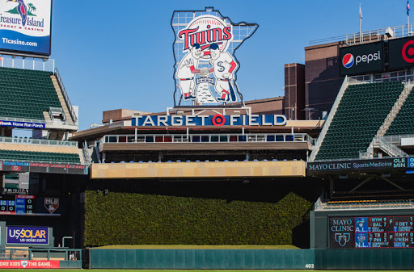

Stadium
The twins play at a stadium called Target Field. Recently constructed in 2010, it is ranked in the top 10 in Baseball stadiums in the MLB! You can take a tour of the entire place! Here's what you'll find... During your guided 90-minute tour to Target Field, you'll see areas of the ballpark many guests normally don't see. These spaces may include the Herb Carneal Press Box, clubhouse, dugout, suite level, Bat & Barrel, Delta SKY360 Club, Budweiser Roof Deck, and Thompson Reuters Champions Club. Guests will be exposed to the art work, displays of memorabilia, environmental and sustainability features of Target Field, as well as Twins history.